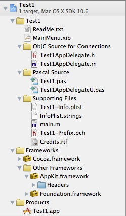
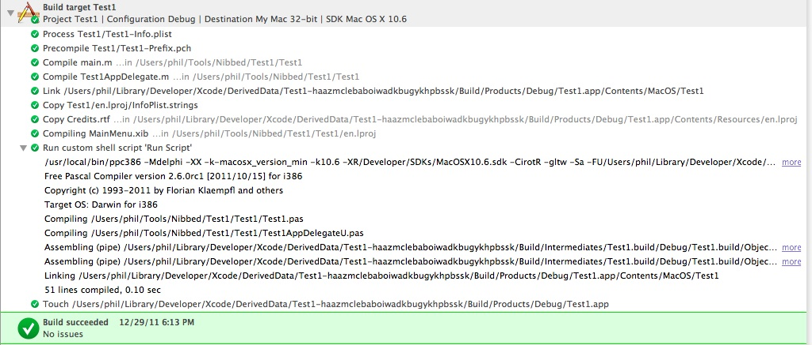
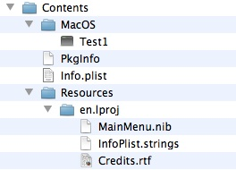
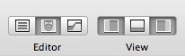
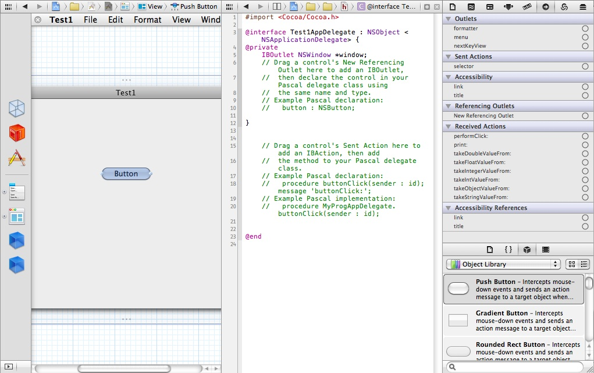
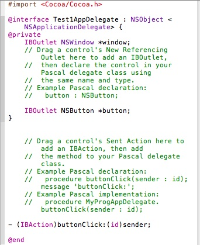
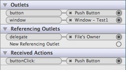
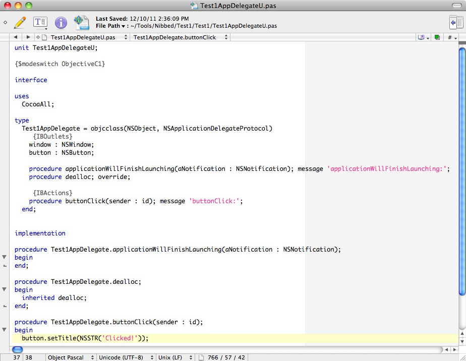

Developing with Objective Pascal
Part 1: OS X and Xcode 4
Contents
Introduction
Why use Pascal at all?
Requirements
A brief tour of Free Pascal on your Mac
Your first Objective Pascal Cocoa app
Reviewing the build log
Adding UI elements and code
Next steps
Introduction
These notes describe how to get started developing Cocoa applications for the
Mac using Pascal. Development is done in Apple's Xcode 4, with
the following substitutions:
- You create a new project in Xcode using a custom Pascal template instead of
a built-in Objective C template.
- You compile your Pascal code in Xcode using a Free Pascal compiler (FPC),
which provides an "Objective Pascal" dialect for working with Cocoa.
But first a few preliminaries in familiar question-answer form:
What is Cocoa?
Cocoa is Apple's recommended user interface framework for OS X and comes
installed on every Mac. Like any UI framework, Cocoa has many similarities
to the Delphi VCL and Lazarus LCL component libraries. However, it also
differs in important ways from VCL and LCL and provides components and
behavior that have no equivalent in those libraries.
Cocoa is written in Objective C and Cocoa apps are typically written
in Objective C.
A Cocoa tutorial is here.
A list of Cocoa's AppKit classes is here.
What is Objective C?
Objective C documentation is here.
Objective C's extensions to ANSI C are described here.
If you've used Delphi or Free Pascal, you may find this useful: http://delphitococoa.wordpress.com/concept-comparison.
What is Objective Pascal?
Objective Pascal (ObjP) is an optional syntax extension to the traditional
Object Pascal language of Delphi and Free Pascal. It was introduced
with Free Pascal 2.5.1. Using the extended ObjP
syntax, you can use and declare Objective C classes, categories and protocols
in Pascal, thereby allowing you to work directly with Cocoa classes without
the need for any "bridge" or intermediate layer. You can also mix traditional
Object Pascal code with your ObjP code, as well as pure Object Pascal units.
Objective Pascal syntax is described here: http://wiki.freepascal.org/FPC_PasCocoa.
Why use Cocoa directly?
While cross-platform UI frameworks can provide a way to use Cocoa indirectly,
they often bury Cocoa beneath thick layers of intermediate code where bugs,
odd behavior, performance problems, code bloat, and non-standard look and
feel can be introduced. When you use Cocoa directly with Objective C or
Objective Pascal, nothing comes between your code and the Cocoa framework.
Typically this results in smaller, better-looking programs that are
easier to maintain and more pleasing to your users.
Why use Objective Pascal?
Objective Pascal allows you to work with "pure" Cocoa in Pascal. Almost
anything that you can do in Objective C you can do in Objective Pascal,
including the following:
- Objective C classes. For example, to inherit from the Cocoa NSWindow class:
type
MyWindow = objcclass(NSWindow)
end;
- Objective C categories. Categories are similar to Delphi helper classes,
but without Delphi's restriction on only one helper class per extended
class. This means you can use categories to simulate partial classes like
in C#, VB.NET and Delphi Prism. In addition to adding methods to a class
that's defined elsewhere, you can also use a category to replace methods
in a class with your own implementation.
- Objective C protocols. Protocols are similar to Object Pascal interfaces
and are used extensively with Cocoa. In Objective C, protocol methods
can be optional, meaning you only have to implement the protocol's required
methods.
Why use Pascal at all?
This is a legitimate question that requires some discussion.
Xcode 4 is a decidedly Objective C-oriented IDE, just as Delphi and Lazarus
are Pascal-oriented IDEs. For years Apple has invested in the
open-source LLVM Project and Xcode 4 now
incorporates the Clang frontend and LLVM backend compilers for C languages.
Clearly Xcode 4 is what Apple wants you to use for OS X and iOS development
and they make it available at a nominal cost. So why would you want to
deviate from the Objective C that Xcode supports so well?
One of the benefits of using cross-platform tools is the opportunity
to recycle skills and code. Hence our interest in Pascal. Between Delphi and
Free Pascal, all the important platforms are well covered, whereas Xcode
targets only Apple's platforms and even Objective C, while technically
cross-platform, is effectively single-platform because most existing
Objective C code assumes Apple frameworks.
However, if you don't have both Pascal skills and code to recycle,
you might find that starting fresh with Objective C is a better approach. These
notes generally assume that you have both Pascal skills and code that you
want to utilize.
But what kind of skills and code are suitable for recycling into
an OS X or iOS app? Let's start with some code candidates.
- Delphi and Lazarus form files and units? No, nothing of this can be used
with Cocoa other than just for general layout ideas or label wording.
- Third-party VCL/LCL controls? No, although since Cocoa is such an extensive
framework you may find that you won't need, say, a custom grid control.
- Code for a scientific model? Yes, this would probably be a good candidate
for use in an OS X or iOS app since it's likely that the model's code is
already independent of its app's user interface and possibly uses XML or other
text files as input.
- Code for a business process? Maybe. Business apps are often tied to a particular
database type or proprietary technology, so it depends on how well the database
is separated from the business process code and how easy it is to switch databases
if that's appropriate.
- Code for a companion mobile app? Yes. You normally don't "port" a desktop
app to iOS. Rather, you use portions of the desktop app's code to develop a
new "product" that provides a subset of the desktop app's features and
often supplements the desktop app.
Now what about existing skills? In general, experience with these Windows
technologies and conventions is probably of little value in the world of
OS X and iOS:
- Windows registry
- COM Automation, ActiveX, etc.
- Resources embedded in executables
- Help (other than HTML)
- Packaging and installing
A useful exercise that you might do when contemplating a move to OS X or iOS is
to list out all the standard and third-party components and tools that you
currently use and then look for a Mac equivalent. For example, you might have
a list that looks like this:
| Component or tool |
OS X equivalent |
iOS equivalent |
| TRichEdit |
Cocoa WebView |
CocoaTouch UIWebView |
| THtmlViewer (or TWebBrowser) |
Cocoa WebView |
CocoaTouch UIWebView |
| Orpheus TOvcTable |
Cocoa NSTableView |
CocoaTouch UITableView |
| Database stuff |
CoreData framework or Sqlite library |
CoreData framework or Sqlite library |
| Web Service Toolkit |
CoreServices framework |
? |
| Inno Setup |
Xcode: Product | Archive |
Xcode: Product | Archive |
Requirements
- Mac with OS X 10.6 Snow Leopard or later (10.7 Lion or later recommended).
- Xcode 4.2 or later (Xcode 4.5 or later recommended). Available for download
if you're in an Apple developer program (US$99/year) or free via the Mac App Store.
- Free Pascal compiler version 2.6.2 for OS X. An installer is available from
here: ftp://freepascal.stack.nl/pub/fpc/dist/2.6.2/i386-macosx/.
- Custom Xcode templates for Objective Pascal. These are available from
here.
Unzip and place the Objective Pascal folder below
/Users/yourname/Library/Developer/Xcode/Templates
(you will need to create the Templates folder if it doesn't exist).
- Text editor for creating miscellaneous files.
TextWrangler
includes full syntax highlighting for many file formats and programming languages,
including shell scripts, HTML, XML, Object Pascal, etc. It's free and is also available
from the Mac App Store.
A brief tour of Free Pascal on your Mac
The Free Pascal installer places files in several locations on your Mac:
- /Developer/Documentation/Free Pascal Compiler - FPC docs are installed here.
- /Developer/FreePascalCompiler - source for compiler and runtime
libraries is installed here.
- /usr/local/share/examples - source for examples is installed here.
- /usr/local/lib/fpc - compilers and compiled units are installed here.
- /usr/local/bin - various FPC utilities and symbolic links (symlinks) to
the actual compilers are installed here.
Since /usr/local/bin should be in your system path, open a Terminal window
and enter the following to see information about the 32-bit and 64-bit FPC
compilers for OS X:
ppc386 -iDVTOTP
2013/02/03 2.6.2 darwin i386
ppcx64 -iDVTOTP
2013/02/03 2.6.2 darwin x86_64
Your first Objective Pascal Cocoa app
Start Xcode and choose File | New | New Project. Under Mac OS X you should see
Objective Pascal (if not, you probably don't have the templates installed
in the correct location). Click Objective Pascal and select the Simple Cocoa
Application template, then click Next and enter the following:
- Product Name - enter Test1 - this will be used for your
project name too.
- Company Identifier - enter whatever you want (for example, com.mycompany);
you can change this later.
- App Store Category - select whatever you want; you can also change this later.
- App Delegate Class - enter Test1AppDelegate.
Now click Next and navigate to where you want to save the project files that
will be created. For example, if you navigate to /Users/yourname/Documents and
you entered Test1 for your project name, Xcode will create a folder named Test1
under Documents. Inside this folder it will create two additional folders,
named Test1 and Test1.xcodeproj.
Test1.xcodeproj contains various project folders and files. In general, you
can ignore these since they're only modified by Xcode. The Test1 folder
contains the source code and other files that you'll work with.
With a new project, the left pane will look something like the illustration
below once you've expanded all the groups of files. This is the
Project navigator; you can show it at any time by clicking the leftmost button
in the row of navigator buttons at the top of the pane.
If you click one of the files in the Project navigator, Xcode opens it with
an appropriate editor in the pane to the right.
Figure 1-1. Xcode 4 Project navigator.

ReadMe.txt - brief getting-started instructions for the new project.
MainMenu.xib - for now you can think of this as similar to a main form .dfm or
.lfm file; it contains a menu and a blank window where you'll drop Cocoa
controls.
Test1AppDelegate.h / Test1AppDelegate.m - the only way to make "connections"
in an .xib file is by dragging a control's Outlet or Action to the delegate class's
header file, so these two Objective C files are included for that purpose
but are otherwise only placeholders.
Test1.pas - this is the Pascal program file.
Test1AppDelegateU.pas - this file contains the Pascal delegate class equivalent
to Test1AppDelegate.h; you enter your code in this file. (The "U" was added so the
unit name does not conflict with the delegate class name. You can rename this
file; just be sure to change the unit name at the top of the file and in
the program file's uses statement too.)
Test1-Info.plist - this XML file contains version information and other vital
settings for your app.
InfoPlist.strings - localized versions of Info.plist keys can go here.
main.m / Test1-Prefix.pch - main ObjC file and "prefix header" file.
Credits.rtf - if you want to include a file in your app with team members'
names, edit this file; otherwise you can delete it.
Frameworks - all Cocoa apps use the AppKit and Foundation frameworks; you can
expand these to view the framework header files (.h).
Products - Test1.app is the app bundle that constitutes your app.
Without doing anything else, choose Product | Run. Your app should run,
displaying a blank window and the app's menu on the menu bar at the top
of the screen. Choose Quit from the app menu to exit the app.
Tip: You can also create a 64-bit version of your app.
Just select the 64-bit scheme at top-left and choose Product | Run again.
Xcode will now use the ppcx64 compiler instead of ppc386 to build your app.
Reviewing the build log
When you choose Product | Run or Product | Build, Xcode builds your app.
If the build fails, for example due to a compile error, Xcode will
display a red exclamation mark in the toolbar status box. Click the
exclamation mark to open the Issue navigator. You can test this by entering
some invalid code in one of your Pascal files. In the Issue navigator,
click the first issue to see the complete build log and the compiler
error message.
If the build succeeds, you can still review the build log by clicking the
Log navigator button (rightmost button at the top of the navigator pane). The
illustration below shows what you should see.
Figure 1-2. The Xcode 4 build log.

Here's a brief description of the build steps you should see with a simple app
like what we created in the previous section.
- Process Test1/Test1-Info.plist - substitutes actual values for the
placeholders in this file and copies it into the app bundle.
- Precompile Test1/Test1-Prefix.pch
- Compile Test1AppDelegate.m
- Compile main.m
- Link Test1 - since the two ObjC files are listed in the target's
Compile Sources build phase, they still get compiled and linked. You can
remove them from there, but that will disable your ability to make
.xib connections, so leave them alone for now.
- Copy Test1/en.lproj/InfoPlist.strings - copies localized strings
into the app bundle.
- Copy Credits.rtf - copies Credits.rtf into the app bundle.
- Compiling MainMenu.xib - creates MainMenu.nib and copies it into
the app bundle.
- Run custom shell script 'Run Script' - launches Free Pascal compiler,
which compiles, assembles and links your Pascal code, creating the executable
file in the app bundle. Since the script also echoes the compiler command
line, you can see exactly what switches were passed to the compiler.
- Touch Test1.app - updates the app bundle's date-time stamp.
Tip: To browse the app bundle's files, right-click Test1.app in
the Project navigator and choose Show in Finder. In Finder, right-click the
bundle and choose Show Package Contents. The list of files should look like
this:
Figure 1-3. App bundle contents.

Adding UI elements and code
Click the buttons on the right side of the Xcode toolbar so they look like this:
Figure 1-4. Xcode 4 toolbar buttons.

By selecting the middle Assistant editor, you split the edit pane into two
panes. And by selecting the rightmost Utilities view, you display the Utilities pane
at the far right.
Now do this:
- Click Test1AppDelegate.h to add it to the editor's list of recent files.
- Click MainMenu.xib to open it in the left edit pane.
- Click the MainMenu.xib's Window button in the vertical list at the left side
of the xib edit pane.
- Click the right edit pane's little grid button and choose Test1AppDelegate.h
from the Recent Files menu to open it.
- Make sure Object Library is selected at the bottom of the Utilities pane.
- Drag and drop a Push Button onto the Window in the xib editor.
Xcode's non-navigator panes should now look something like the illustration
below. Note that this is a pretty tight fit on a laptop. (Tip: You can
turn on code line numbering in Xcode Preferences.)
Figure 1-5. Adding a button.

In order to reference a UI control in your code, you need to add an "outlet"
connection and then declare the control in your delegate class. If you don't
need to reference the control in code, you can skip this part. Typically that
would be the case with buttons. However, for this example, we'll change the
button's caption in code, so we need an outlet for it.
As indicated in the ObjC code's comments, click the New Referencing Outlet's circle
for the button, then drag and drop it where indicated in the ObjC code. Xcode
will prompt you for a name - enter "button".
Similarly, to respond to control events, you need to add an "action" connection
and add a receiving method for it in your delegate class.
Again, as indicated in the ObjC code's comments, click the selector's circle (under
Sent Actions), then drag and drop it where indicated in the ObjC code. Xcode
will prompt you for a name - enter "buttonClick".
Your ObjC code should now look like this:
Figure 1-6. Outlet and action declarations in ObjC delegate class.

Now click the App Delegate button in the xib editor's vertical list. The
Utilities pane should now look like the illustration below. Note how the
outlets and action correspond to what's declared in the ObjC delegate class.
Figure 1-7. App Delegate's connections.

Since we want to use the Pascal delegate class, we need to add the outlet and
action there too. Click Test1AppDelegetaU.pas to open it in the editor and,
following the ObjC code's comments, add code so it looks like this:
Figure 1-8. Outlet and action declarations (and action implementation) in Pascal delegate class.

Important! A word about Xcode's syntax highlighting: Whether it's
a bug, an overlooked feature or just intentional, Xcode 4's syntax highlighting
no longer works for some languages, including Pascal, even though the language
support files are still included. The illustration above shows what editing of
Pascal looks like in TextWrangler. When you save the file in TextWrangler,
changes will immediately be reflected in Xcode's editor.
Note that you can right-click a file in
Project navigator and choose Open with External Editor. If the file is
associated with TextWrangler, it should open there (although this also appears
to be buggy some days). In OS X, to associate a file with the application that
should open it, select the file in Finder and choose File | Get Info (or
press Cmd+I), then select the application in the Open with list.
Now run your app and click the button - its caption should change to "Clicked!".
Next steps
If you followed the brief tutorial above, you will have created an actual Cocoa
app, writing only a half-dozen lines of Pascal code, all done in Xcode 4 (with the
possible exception of using an external code editor). You should also have
a basic feel for Xcode and its various panes and editors.
There's a lot more to cover, but that's for future installments.
Copyright 2011 by Phil Hess.
macpgmr (at) fastermac (dot) net
First posted March 27, 2011; last edited Feb. 25, 2013.